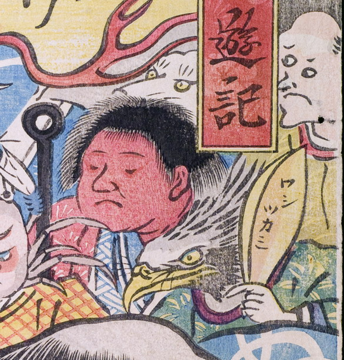

鷲；ワシ，童子；ドウジ，三つ目；ミツメ，男；オトコ

3体の化物。手前には頭部が鳥の化物。するどい嘴を有している。手に持った笠のようなものには「ワシツカミ」と記されている。その後ろには赤肌の童子。鉄棒を持っている。最奥には三つ目と思われる禿げ頭の白い化物がいる。
著作者：玉園／出典：親書誌：U426_nichibunken_0145：画本西遊記百鬼夜行ノ圖；エホンサイユウキヒャッキヤギョウノズ／日付：2009／資源識別子：U426_nichibunken_0145_0020_0000
Copyright (c)2010- International Research Center for Japanese Studies, Kyoto, Japan. All rights reserved.